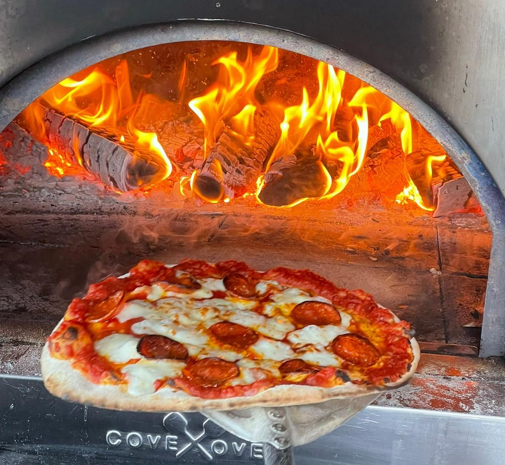
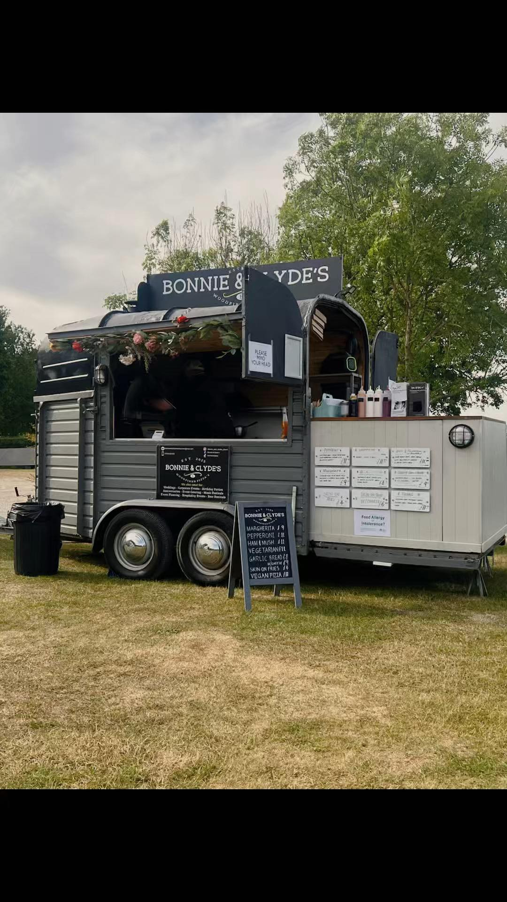
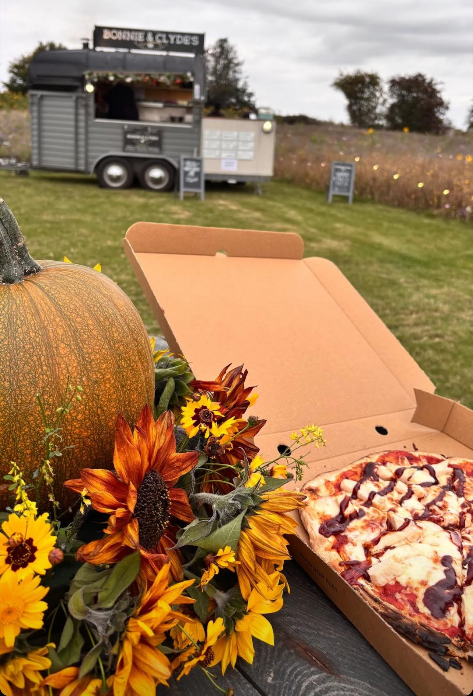

Ripon wood-fired pizza trailer
Private hire pizzas that feel every bit as memorable as the event itself.
Bonnie & Clyde's brings hand-stretched wood-fired pizzas to weddings, birthdays, village events and private parties across Ripon and North Yorkshire.
- Converted horse box trailer with a distinctive premium setup
- Popular for weddings, birthday parties and village events
- Praised for flexibility, friendly service and standout pizzas
About the trailer
Wood-fired pizza with character, not a generic catering van.
From margherita classics to crowd-pleasing pepperoni, garlic cheese and vegan options, Bonnie & Clyde's is built around proper event food: fast service, generous toppings and pizzas guests actually remember.
The converted horse box trailer gives every setup a polished focal point, whether you're planning a relaxed family gathering or a full celebration.
Private hire
Ideal for weddings, birthdays, village events and laid-back celebrations.
Bonnie & Clyde's is best when the food needs to feel warm, generous and stress-free. Reviews repeatedly highlight how easy the team is to deal with before and during the event.
Wedding catering
Birthday parties
Retirement parties
Hen weekends
Village events
Private celebrations
100%
recommended on Facebook from the reviews shown
32+
guests specifically mentioned in one catered hen weekend review
Ripon
home base with catering for events across the wider area
Visual flavour
A setup guests talk about before the first pizza even lands.

Why people choose Bonnie & Clyde's
Quality pizzas are expected. What keeps coming up in the reviews is the full experience: friendly hosts, great ingredients, tidy setup, flexibility and food that arrives hot and generous.
Social proof
Real feedback from parties, family events and local gatherings.
“These guys were brilliant from start to finish, completely took the stress out of worrying about catering for a large number of people.”
“Bonnie & Clyde's came out on top for quality, reputation, flexibility and price. The food was delicious and the team on the night was friendly and very helpful.”
“Wood-fired and worth every bite. The garlic cheese pizza is one of the best. The service is professional and friendly and they use the best ingredients.”
“Bonnie and Clyde’s set up is fantastic and they are great to have at your parties or events. Wholeheartedly recommend them.”
Book Bonnie & Clyde's
Planning an event in Ripon or North Yorkshire?
For availability, private hire enquiries and event catering, the quickest route is to message Bonnie & Clyde's directly on social media.